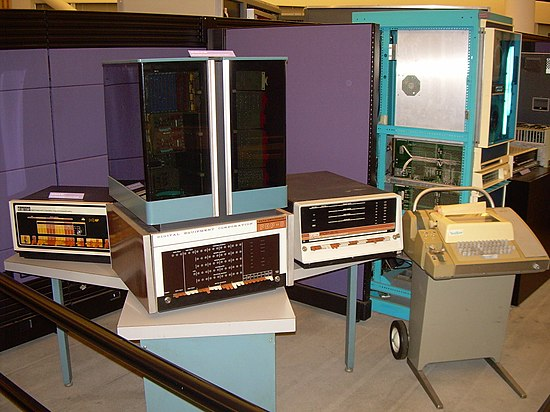

1940s - 1950s: Primeiros Computadores Eletrônicos

1960s - 1970s: Surgimento dos Minicomputadores

Explore a evolução dos computadores ao longo do tempo e descubra os marcos importantes que moldaram a tecnologia que conhecemos hoje.